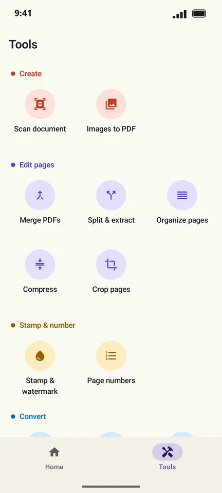
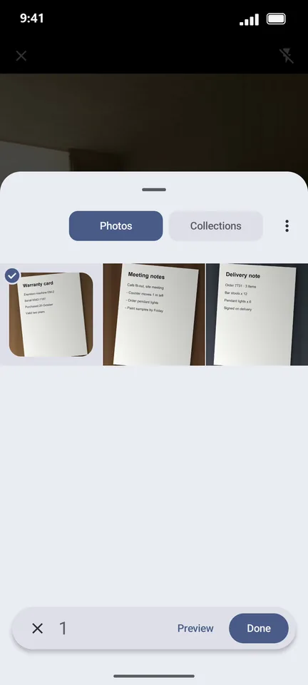
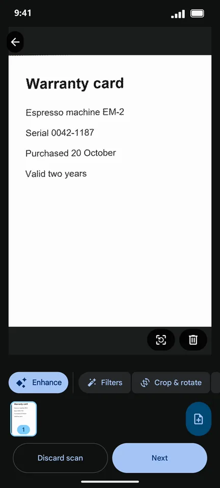

How to scan a document to PDF with your Android phone
Receipts, warranty cards, signed forms: PageCat uses your camera to find the page edges, straighten the page and crop away the table. You can also import a photo you took earlier and get the same clean result.
Steps
Open the Tools tab and tap Scan document.

Point the camera at the page and tap the shutter. To use a photo you already have, tap the gallery button and pick it.

The scanner detects the edges and straightens the page. Use Crop & rotate or Filters if needed, then tap Next.

Back in PageCat, add more pages with Scan pages, name the file and tap Create PDF.

Good to know
- Leave Make text searchable (OCR) on, so you can later find the scan by any word on it.
- The scanner is part of Google Play services and downloads once, the first time you use it. After that it works offline.
Questions
Does PageCat need camera permission?
No. The scanner runs in Google Play services and only hands PageCat the pages you scan.
Can I scan several pages into one PDF?
Yes. Tap Scan pages again before Create PDF; each scan becomes a page.